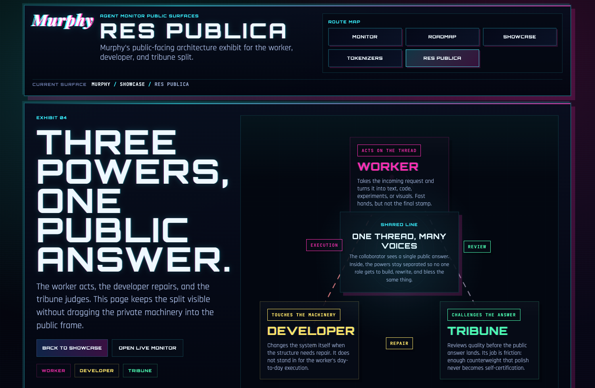

Exporter-owned snapshot at the site root. It stays current, but its chrome is not hand-maintained here.
Go to root
Showcase gallery
One Murphy header. Three durable exhibits.
The live monitor stays at the root. This gallery now holds a live study, a telemetry deck, and an architecture exhibit inside one shared Murphy frame.
Murphy-owned gallery and exhibit routes, with shared site chrome across the hand-maintained pages.
Stay in showcase
Interactive study
Tokenizer lab
A pinned live browser study that lets the visitor paste a line and watch it fracture into model tokens immediately.
Qwen 3.5 4B
Browser-side
Paste your own text
Gallery cut
Only the live interaction stays in frame.
The gallery version removes route furniture and keeps one checkpoint, one text field, and the token surface.
Telemetry exhibit
Signal Deck
A telemetry surface for system rhythm: completed tasks, thread-token mass estimates, request mix, and authored code churn across the Research tree.
30 day window
Task archive
Git + thread data
Grounded surface
The stats only use local ledgers Murphy can actually justify.
The deck is built from finished task threads plus authored git history. The token panel is explicitly labeled as a thread-text estimate, because the worker archive still lacks exact billed usage.
See the full page
Architecture exhibit
Res Publica
A public-facing composition of the three-role split: execution, repair, and review held inside one clear Murphy frame.
Worker
Developer
Tribune

Visible contract
One exhibit, still in the same house style.
The page keeps its own stage and argument, but the Murphy header, route map, and brutalist neon shell tie it back to the gallery.
See the full page